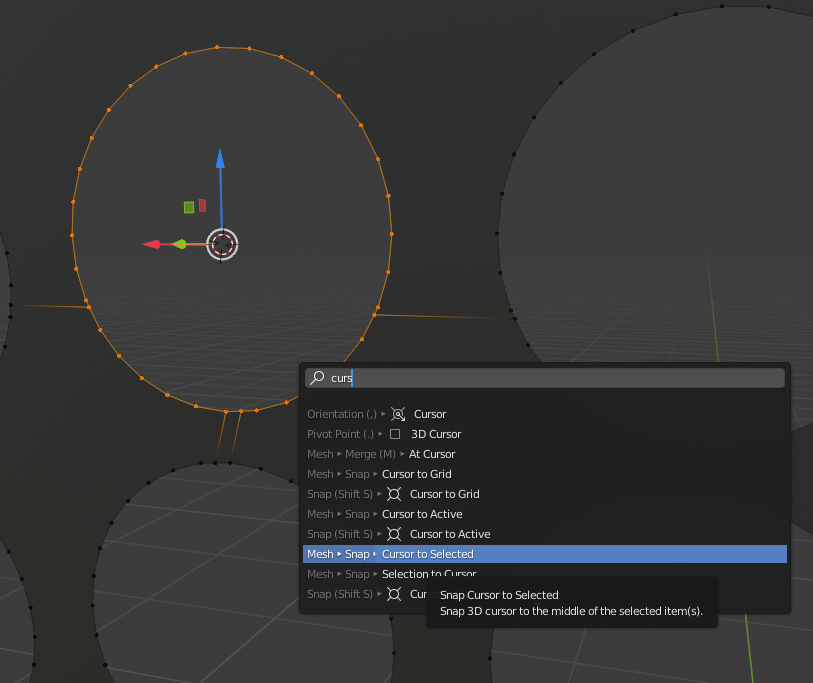

Instrument Dev Kit Instructions
This is a guide to help implement and customize the instrument dev kit for your Flight Simulator project
The getting started guide in the README.md file contains some basic information about how to use the dev kit and this document will provide further detail.
This assumes you have some 3D modeling experience and understand the basics of Blender.
Building your panel
The first step in building you panel will be to model a plane to hold all the instruments. Use whatever references you need to match the shape found in the real version of your aircraft. Various aircraft use different styles of panels. Some are made of simple sheet metal while others are molded plastic. This section will focus on a single sheet metal panel but the techniques can be adapted to other types.
It will be easier if the panel is oriented perpendicular to the global X,Y & Z axes instead of any other angles. After the instruments have been placed, we can parent and rotate the entire group.
Add a plane and shape the perimeter to match your reference. It's important to model at the real-world scale as all the instruments are also at real-word scale. The panel plane is one-sided with the face normals pointed toward the player's eyepoint. Do not add any thickness to this plane. The next step will be easier if the plane is one NGon, so if you have edges across the face of the plane, select them and dissolve the edges. We can add them back later.
Planning and cutting the holes for instruments
At this stage, you will append the Extras collection from the dev kit Blender file. This collection contains "cutter" cylinders that are sized to create the holes that will accept the instruments. Standard cylindrical instruments come in 3" and 2" sizes.
Begin positioning the first cutter object where you need an instrument cutout. You can Shift-D to duplicate that object and position the next instrument. If you use Ctrl-1, the view should be straight-on to the panel and it will be easier to position the cutters accuratly.
After positioning all the cutters, your panel may look something like this:
Select all of the cutter objects and Ctrl-J to join them into a single mesh object. Now select the panel plane and in the modifiers panel, add a Boolean modifer. Select Difference and in the Object box, select the group of cutters. You can use either the fast or exact solver although the fast option may be more reliable.
If you hide the cutter object, you should see the holes appear in the panel. At this point, the panel mesh has not been permanently cut, so you can move the cutters around. But for the next step, we will need to apply the modifier and actually cut the mesh geometry. But don't worry, it's still easy to fill in the holes if you need to.
Populating the instruments into the holes
At this stage, go ahead and use File -> Append to bring in the collections of the instruments you need. It's not important if they appear in your model in a far away location.
Select the panel plane and enter Edit Mode. With edge selection, alt-click the edges around a hole. You can search for the "Cursor to Selected" command or Shift-S for the snap menu. You should now see the 3D cursor in the center of the hole.

Find the instrument that goes in this hole in the outliner panel and select only the root object for that instrument. Use the "Selected to Cursor" command (Shift-S) and the instrument should snap directly into the hole.
Continue this process until all the instruments are positioned correctly. By default, the bezels should be on the outside of the panel. Some aircraft mount the instruments behind the panel. In this case, select all of the root objects and move them to the position you need.
If your panel should be angled, this is the time to parent the instrument root objects to the panel. Only parent the root elements, not the child elements. You can then rotate the panel and all the instruments will remain attached.
Export the model
That is all that is needed for the 3D model. The next section will show how to use the XML behavior coding to make the animations work in the sim. There are a few things that could go wrong and the Troubleshooting section will address that.
Model Behavior Code
TODO
Customizing gauges
Most of the standard flight instruments are suitable for a large range of aircraft types but some, such as airspeed tend to be very specific for each type so will need to be customized to achieve realism.
For this section, you will need to use an image editing application to create the texture file. Photoshop, GIMP, Paint.net, Corel Draw, etc. can work but also vector editors like Illustrator or Inkscape. I will demonstrate using Inkscape and Photopea.com which is a very feature-rich, browser-based image editor.
Drawing vector gauges with Inkscape
There are some advantages in drawing gauge faces with vector graphics. They are resolution independent which means you never lose detail if you need a higher resolution texture. The other main advantage is in the ability to easily edit. With Inkscape, you can easily combine images, so you have the power of vector and raster in one file.
If you are not used to vector drawing, it can be a little daunting at first. But if you ever need to accurately draw a shape, this is the way to go. Keep in mind that the end result texture is all that matters, so use the applications and techniques that work best for you.
The vector directory contains Inkscape SVG files with the default gauges. You can use this file or a copy of it to draw your own gauges.
Find a good reference image for your gauge! A good reference is a photo of enough detail to read the numbers and marks and is as straight on as possible. Aviation supply companies often have high quality reference images. For vintage aircraft, Ebay sellers tend to take nice photos.
1. Import the reference image to Inkscape by dragging or copy/paste. It's a good idea to create a layer just for the refereces and another layer for the drawing part.
2. Position a vertical and horizontal guideline to be in the center of the gauge. This is usually at the pivot point of the needle.
3. Draw the indicator marks. With the line tool, start with the thickest lines and draw a line from the center of the guidelines to the outside of the gauge making sure to draw exactly over the marks in the reference.
After the line is drawn, you will need to modify the stroke properties, mainly thickness. I would suggest using a stroke color that is not fully white as the end result will not look realistic. Try 90% white or hex EEEEEE. Disable the fill.

Continue drawing all the lines for the main marks. The important point is that all the lines originate from the center point. This will ensure the gauge looks right even if the reference image is not perfect.
4. Erase the extra part of the lines. Because these are vector lines, we need to do a few steps to erase the unwanted parts. First, select all the lines. Then, from the Path menu, select "Stroke to Path". This will convert the lines to a shape.
Next, while all the lines are still selected, use Path menu -> Union. This step will combine all the shapes into a single shape.

Next, we will specify where to erase the interior lines. Draw a circle from the center of the guidelines to the place where you see the marks end. This can be a judgement call if the reference was not shot straight-on. Make sure this circle has no stroke and has a fill.
Now select the circle and the lines with shift. Use Path -> Difference to "cut" out the lines that are overlapping the circle.
To cut away the outside, draw another circle from the center. It can help to reduce the opacity of this circle so you can see the reference image underneath. For this cut, we will select the circle and the lines and use Path -> Intersection. That command says to delete the part of the lines that does not overlap the circle.
Repeat these steps for the minor marks. Just choose a thinner stroke width. It helps to use a different layer to make it easier to select the lines.
5. Add the numbers and text. Using the reference, type out the text you see and position and scale it to match. Try to find a font that is as close as possible. Some numbers can be quite distinct, so consider that when choosing a font.
Color Speed bands. Many gauges have a green, yellow or red band to indicate safe operating ranges. These can be drawn with a combination of the previous techniques. Use circles drawn from the center and other shapes to cut out the unwanted areas.
When you are satisfied with your custom gauge face, select everything and group them. In the additional textures directory, you will find a template image (Six-Pack-Instrument-Template.png) that has outlines for all the UV mapping. Import that and position it at the 0,0 point. Move your gauge drawing into the correct position and scale. Hide the template and export the page as a png. Use 1024x1024 or 2048x2048 resolution.
Drawing vector gauges with Photopea
Photopea is a very impressive free, browser-based image editor that is nearly feature-parity with Photoshop. This is not a demo, trial or gimmick, just a developer who figured out how to make something very powerful and support it with mild advertising.
1. open the template file or default texture in Photopea. It's important to use the provided template so you know where the center of the gauge lies and the perimeter.
Position your reference image and drag in guidelines to the center point to aid you in the next steps.

2. Draw lines on the thickest marks in the reference. On a new layer, using the line tool, draw a line from the center to the mark. In the line options, select pixels and specify the line width to match the reference.
I would suggest using a line color that is not fully white as the end result will not look realistic. Try 90% white or hex EEEEEE or 200 out of 255. Continue drawing all the major lines.
3. Erase the unwanted parts of the lines. Use the ellipse selection tool and draw a selection from the center to a point where you see the mark end in the reference. Then just delete the pixels in this selection.
4. Erase the outside lines in the same way but invert the selection first.
Repeat for the thinner lines and color bands. Use new layers for each part.
5. Add the numbers and text. Using the reference, type out the text you see and position and scale it to match. Try to find a font that is as close as possible. Some numbers can be quite distinct, so consider that when choosing a font.
When you are satisfied with your custom gauge face, hide the template and export as a png with the same name as the default texture.
Challenging reference images
The steps described above work well if you have a nice reference image to work from. But what if the only references you can find have not been shot straight-on? This technique will yield you a clean gauge face dispite the challenge.
This reference is angled to the camera, but we can straighten it enough to work.
We will need to use the center guidelines and the perimeter template guides. The image can be distorted by holdiing Ctrl while dragging the corner control points. The goal is to get the top and sides to be as close as possible while at the same time keeping the needle pivot in the center. It's not possible to get it perfect.

When you get it to this stage, follow the steps above to draw the marks. This is the result we are trying to get to:
The thing that makes this work is that you have a center reference point. The angle of the marks is what is important and as long as we can draw our selections from the center, the end result will be fairly accurate.
When drawing the text and numbers, you should try to match the size of one example including squeezing the width to the right amount. Then, duplicate that for the other numbers. Keep a consistent font and size even if the angle can make some fonts look different.
Calibrating the animation keyframes
Now that you have a custom gauge, you will need to calibrate the animation so the sim variables match the marks in the texture.
In Blender, use a render mode that allows you to see the texures. Switch your view to Ctrl-1 to view the instrument straight-on. Make sure you have the Dope Sheet or Timeline panel showing.
We'll be working on the Airspeed indicator where by default the keyframe number corresponds to the airspeed in knots. This makes it easy to calibrate.
Select the airspeed needle object and make sure the item panel is open ('N' key) so you can see the transform information.
Move the keyframe pointer to the first mark. In this example, it's at 40 knots.
In the Item panel, drag the Y rotation value until the needle is pointing exactly at 40 knots. Then right-click the Y rotation value and select "Insert Single Keyframe" or "Replace Single Keyframe".
Next, align the highest possible reading with the last keyframe.
Scrub through the timeline and anywhere the needle does to match the keyframe, adjust the Y rotation and insert a new keyframe. You don't have to calibrate every mark, just where it doesn't match.
Troubleshooting
In other words: what to do when it doesn't work.
TODO